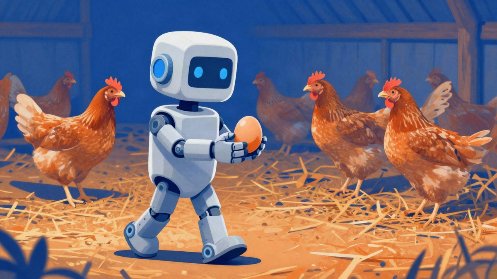

Moždani implantat vratio govor pacijentima s ALS-om: razumljivost do 94 posto, jedna pacijentica ponovno pjeva

Istraživači s Kalifornijskog sveučilišta u Davisu poboljšali su algoritme za pretvaranje moždanih signala u govor, pa je razumljivost kod pacijenata s ALS-om narasla s nešto više od pola na 94 posto riječi. Pacijentica s 384 elektrode uz sustav prenosi intonaciju i može otpjevati ljestvicu. Tehnologija je testirana na već prikupljenim podacima, a cijena i dostupnost u Europi nisu poznate.
Istraživači s Kalifornijskog sveučilišta u Davisu sljedeći tjedan predstavljaju rezultate eksperimenata o vraćanju govora pacijentima s amiotrofičnom lateralnom sklerozom (ALS). Prema njihovim podacima, razumljivost govora generiranog izravno iz moždanih signala narasla je na 94 posto. Tehnologija se tako pomiče iz faze dokaza koncepta prema praktičnoj primjeni.
Grupa je 2025. izvijestila da je postigla kašnjenje od samo 10 milisekundi pri generiranju izražajnog govora u stvarnom vremenu, izravno iz mozga u glas. Slušatelji su tada točno prepoznali tek nešto više od polovice izgovorenih riječi. Analizom istog skupa podataka i poboljšanjem algoritama razumljivost je sada podignuta na 94 posto. Stručnjaci to ocjenjuju kao klinički relevantno poboljšanje, a ne samo efektan primjer strojnog učenja.
Dva pacijenta, stotine elektroda
U eksperimentu su sudjelovala dva pacijenta. Caseyju Harrellu, koji ima ALS, ugrađeno je u mozak 256 elektroda. Uz sustav je tijekom dvije godine "izgovorio" gotovo dva milijuna riječi, razgovarao s obitelji, pisao pisma i radio na internetu preko laptopa.
Drugoj sudionici, 58-godišnjakinji koja je ranije bila pjevačica i zbog ALS-a je izgubila sposobnost govora, ugrađeno je 384 elektrode. Ona je uz sustav mogla prenijeti i glazbene nijanse govora. Mijenjanjem visine tona izražava upitnu ili radosnu intonaciju, a otpjevala je čak i ljestvicu. Od emocija je zaplakala.
Ograničenja
Mariska Vansteensel, istraživačica neuroračunalnih sučelja s Medicinskog centra Sveučilišta u Utrechtu, upozorava da je tehnologija testirana na već prikupljenim podacima. Zato tek treba provjeriti koliko dobro radi u stvarnom vremenu i može li se primijeniti na ljude s različitim stupnjevima gubitka govora.
Dodaje da za svakodnevnu uporabu sustavi moraju biti potpuno implantabilni. Današnji sustavi traže da se korisnik spoji na računalo preko posebnih priključaka ugrađenih u glavu.
Istraživanja se nastavljaju. Algoritmi se trebaju provjeriti na široj skupini pacijenata, a sustavi učiniti potpuno autonomnima. Bežične sustave trenutačno razvijaju i testiraju tvrtke poput Neuralinka i Paradromicsa, ali o njihovoj komercijalnoj primjeni za sada je rano govoriti.
Izvor: 3DNews
Povezani članci
 Andarium: Android 17 na iPhoneu i iPadu je stigao na App Store20. studenoga 2026.
Andarium: Android 17 na iPhoneu i iPadu je stigao na App Store20. studenoga 2026.- Rabljeni avionski motori postaju generatori za AI data centre: xAI već ima 8 komada od 50 MW19. studenoga 2026.

Humanoidni robot Howl uči skupljati jaja s poda peradarnika, NC State cilja na 2027.17. studenoga 2026.